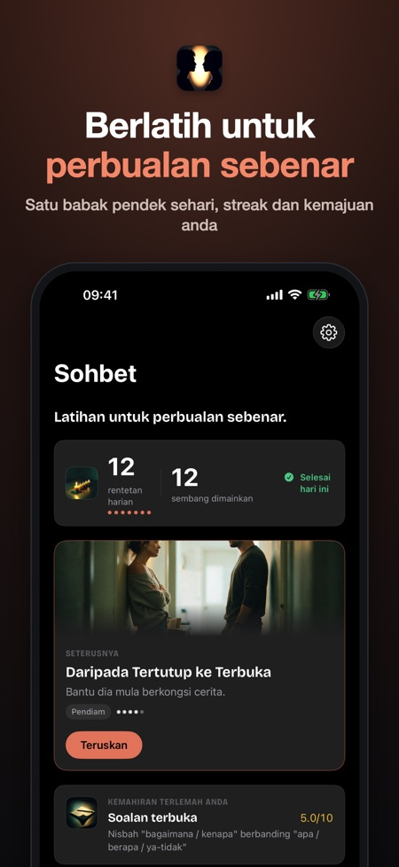
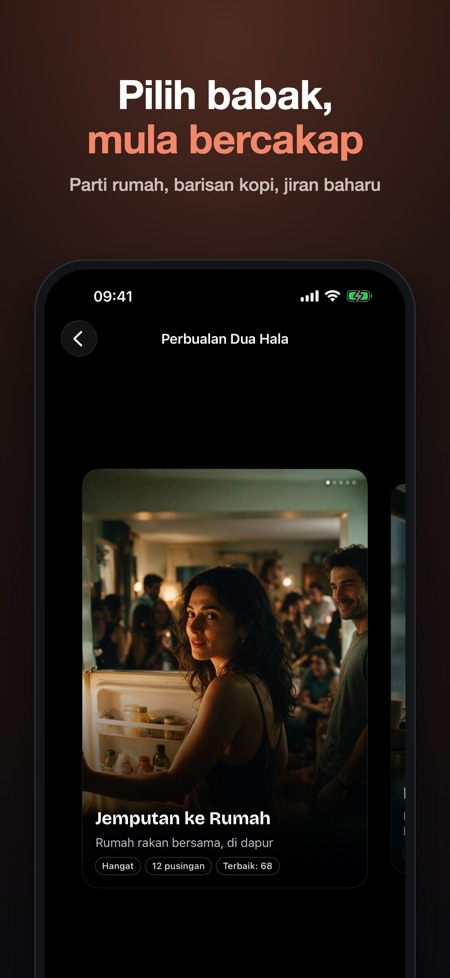
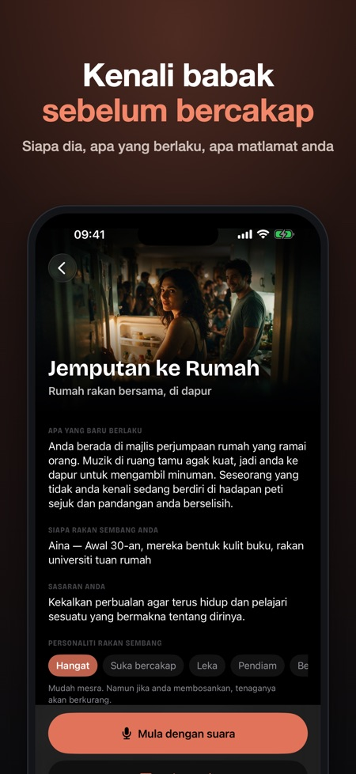

Tingkatkan keyakinan berbual. Dua perbualan tanpa langganan — perbualan langsung, mod suara dan penilaian penuh. Tanpa akaun, tanpa e-mel. Kini 41 bahasa, dan Pro bermula dengan seminggu percubaan.



Sohbet ialah permainan di mana anda melatih kemahiran sosial dengan seseorang yang memberikan reaksi sebenar kepada anda.
Individu di hadapan anda dimainkan oleh AI, dan ia tidak cuba untuk berbuat baik. Tanya soalan tertutup dan ia akan bosan. Terlalu banyak bercakap tentang diri sendiri dan ia hilang minat. Tanya perkara yang betul pada masa yang tepat dan ia akan mula terbuka. Bar minat di bahagian atas skrin menunjukkannya secara langsung — jika ia mencapai sifar, perbualan tamat.
APABILA PERBUALAN TAMAT
Penilaian tidak bermula dengan pujian. Ia menganalisis giliran demi giliran: apa yang anda lakukan, mengapa langkah itu berjaya atau tidak, dan apa yang sepatutnya anda katakan. Tiada nasihat umum seperti "lebih terbuka" — setiap nota dikaitkan dengan nombor giliran dan ayat yang benar-benar anda tulis. Cadangan ayat yang diberikan adalah ayat yang boleh anda gunakan secara realistik.
Penilaian agak ketat. Perbualan purata mendapat 50-60; markah melebihi 80 bermakna ia benar-benar bagus. Penilai yang memuji semua perkara tidak mengajar apa-apa.
BERCAKAP BUKAN MENAIP
Anda boleh bercakap dan bukannya menyusun teks. Suara karakter adalah lelaki atau wanita bergantung pada senario. Kelajuan dan jeda anda juga diambil kira dalam penilaian — sama seperti dalam perbualan sebenar.
16 SENARIO
Meja sebelah di kafe, parti di rumah, makan malam tempat kerja, duduk di sebelah orang yang tidak dikenali, mencelah secara sopan, menolak jemputan. Senario dibuka daripada mudah ke sukar. Anda boleh memainkan semula senario dengan personaliti yang berbeza — watak yang sama, tetapi individu yang jauh lebih sukar.
SENARIO BERDASARKAN KELEMAHAN ANDA
Selepas beberapa perbualan, kemahiran yang masih lemah akan kelihatan jelas. Satu ketikan menghasilkan senario baharu yang difokuskan khusus pada kemahiran tersebut.
SEJARAH
Setiap perbualan disimpan bersama transkrip dan penilaiannya. Anda boleh melihat tabiat berulang anda — sama ada anda sentiasa terhenti di tempat yang sama atau semakin bertambah baik.
PRIVASI
Tanpa akaun, tanpa e-mel. Transkrip dan penilaian anda disimpan di dalam telefon anda. Semasa perbualan, teks melalui pelayan kami ke model AI yang menulis balasan watak dan penilaian anda, dan suara anda dihantar ke perkhidmatan pengecaman pertuturan untuk ditukar menjadi teks. Pelayan kami tidak menyimpan teks itu, kecuali dalam dua keadaan: permintaan yang gagal disimpan selama 7 hari supaya kami dapat membetulkan ralat, dan hanya jika anda menghidupkannya dalam Tetapan, sampel kecil perbualan disimpan selama 90 hari untuk menambah baik aplikasi. Kedua-duanya tidak dikaitkan dengan anda. Audio tidak pernah disimpan sebagai fail.
LANGGANAN
Dua perbualan disertakan tanpa langganan — termasuk karakter langsung, mod suara dan penilaian penuh. Sohbet Pro adalah langganan bulanan yang bermula dengan seminggu percubaan: ia mengalih keluar had tersebut dan membuka laporan jurulatih yang membaca semua perbualan anda secara serentak, serta penjanaan senario yang disasarkan pada kelemahan anda.
Langganan diperbaharui secara automatik pada akhir setiap tempoh. Anda boleh membatalkannya pada bila-bila masa di bawah Tetapan > Akaun Apple > Langganan.